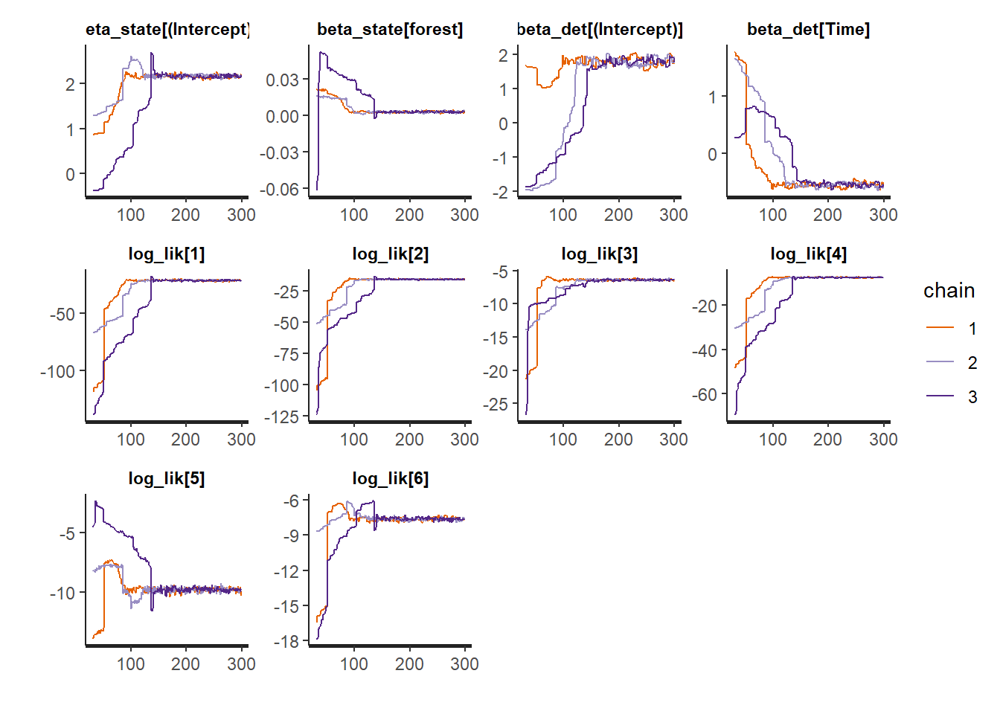
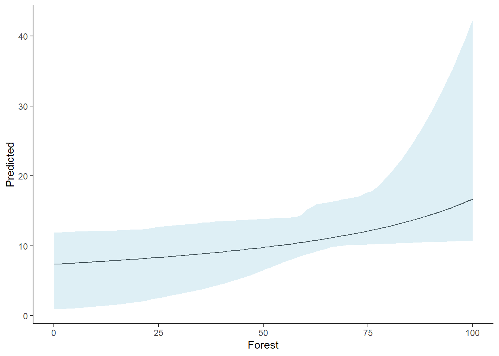

library(tidyverse)
library(unmarked)
library(ubms)Clase 1.2: Modelos N-Mixture Bayesianos (ubms) para estimar abundancia
Introducción a la Inferencia Bayesiana
Principales referencias:
Bayesian GLMs in R for Ecology
Applied Statistical Modelling for Ecologists
La inferencia bayesiana es cada vez más reconocida como una herramienta esencial para modelar datos ecológicos. El enfoque bayesiano contrasta con la estadística frecuentista, que es más ampliamente utilizada. De hecho, la inferencia bayesiana antecede a la estadística frecuentista por aproximadamente 200 años y ofrece importantes ventajas, especialmente en el contexto del modelado ecológico, ya que se adapta bien a conjuntos de datos pequeños y a la toma de decisiones.
La inferencia bayesiana se atribuye al Reverendo Thomas Bayes, un clérigo, filósofo y estadístico inglés del siglo XVIII. Sus ideas fueron posteriormente ampliadas por el polímata francés Pierre-Simon Laplace. La estadística frecuentista se desarrolló mucho más tarde, principalmente en el siglo XX, gracias a varias figuras, incluyendo al brillante genetista británico Sir Ronald Fisher y al matemático polaco Jerzy Spława-Neyman.
Existen varias diferencias importantes entre el enfoque bayesiano y el frecuentista, especialmente en la forma en que manejan la incertidumbre
Enfoque frecuentista:
En el marco frecuentista, las inferencias se basan en la probabilidad ( P) de los datos (D) dado que la hipótesis (H) es verdadera:
\[P(D|H)\]
Este enfoque se implementa probando los datos contra una hipótesis nula mediante la siguiente pregunta:
¿Cuál es la probabilidad de obtener nuestro conjunto de datos si la hipótesis nula es verdadera?
Si la probabilidad (o valor P) de que los datos respalden la hipótesis nula es pequeña, entonces se rechaza la hipótesis nula. El umbral crítico para considerar un valor P como pequeño se establece típicamente en 0.05, aunque este criterio es completamente arbitrario (y generalmente demasiado alto). Es importante destacar que si la hipótesis nula es rechazada, no es correcto concluir que la hipótesis alternativa es verdadera. Asimismo, es erróneo interpretar que, en el caso de un valor P grande, los datos apoyan la hipótesis nula.
Desde una perspectiva frecuentista, solo es posible hacer afirmaciones de probabilidad sobre los datos, no sobre la hipótesis de interés. Un estadístico frecuentista trata los parámetros en un modelo como cantidades fijas pero desconocidas, a las cuales no se les asignan probabilidades. La incertidumbre se expresa únicamente como la probabilidad frecuentista de los conjuntos de datos generados a partir de muestreos repetidos hipotéticos.
Si bien este enfoque es insatisfactorio en el sentido de que no permite hacer inferencias directas sobre las cantidades de interés, el enfoque frecuentista es (al menos superficialmente) objetivo, ya que las conclusiones se basan únicamente en los datos. Sin embargo, en la práctica, las decisiones relacionadas con el diseño experimental, la recolección de datos y la elección de las variables a analizar introducen inevitablemente subjetividad en cualquier análisis frecuentista.
Enfoque bayesiano
En contraste con el enfoque frecuentista, la inferencia bayesiana proporciona una medida de la probabilidad de que la hipótesis sea verdadera dado los datos; P(H|D). Como consecuencia, la inferencia bayesiana permite obtener conclusiones fundamentalmente diferentes con respecto a la probabilidad.
En la inferencia bayesiana, los parámetros del modelo se tratan como variables aleatorias con cantidades conocidas, y la probabilidad es una medida directa del grado de creencia. Dado que la probabilidad es una medida de la incertidumbre, es posible hacer declaraciones claras sobre la probabilidad de cantidades desconocidas, considerando tanto los datos como la información previa existente.
Así, mientras los frecuentistas trabajan con estimaciones puntuales de los parámetros, basadas en medias y varianzas, el enfoque bayesiano genera distribuciones posteriores de los parámetros considerando tanto los datos como cierta “información previa” o “priors”. El resultado final es que el enfoque bayesiano proporciona una visión más completa de la incertidumbre y permite realizar afirmaciones probabilísticas sobre los parámetros del modelo con mayor certeza.
Los priors utilizados en el análisis bayesiano pueden ser vagos (“no informativos”), ligeramente explicativos (“débilmente informativos”) o bastante específicos (“informativos”), pero todos deben ser especificados en un modelo ajustado mediante inferencia bayesiana. La distribución previa es una característica clave de la inferencia bayesiana, ya que permite incorporar información existente en el análisis, algo que resulta difícil de hacer en el marco frecuentista.
La selección de una distribución previa adecuada puede basarse en información de estudios publicados previamente, experiencia, opinión de expertos o modelos teóricos. Así, la información previa sirve para vincular los modelos con estudios anteriores y, de este modo, refleja el proceso científico de acumulación de información y su uso para actualizar la comprensión de un sistema.
Con la inferencia bayesiana, podemos formular la pregunta: ¿Cuál es la probabilidad de que nuestra hipótesis sea verdadera, dado los datos?
Esta probabilidad se puede estimar utilizando el teorema de Bayes:
\[p(H|D) = \frac{P(D|H) \times P(H)} {P(D)}\]
Donde:
P(H|D) es la probabilidad posterior.
P(D|H) es la verosimilitud, que representa la probabilidad de los datos.
P(H) es la probabilidad previa o “prior”.
P(D) es la densidad de la probabilidad marginal de los datos, también llamada evidencia, que actúa como constante para todas las hipótesis.
El paquete ubms es una extensión de unmarked que permite el ajuste de modelos de ocupación y abundancia en un marco bayesiano. Utiliza Stan, un lenguaje de modelado probabilístico que facilita la inferencia estadística a través de MCMC (Markov Chain Monte Carlo). Algunas ventajas clave del paquete incluyen:
Ajuste de modelos de ocupación, abundancia y N-Mixture en un marco bayesiano.
Mayor flexibilidad en la especificación de priors y estructuras jerárquicas.
Mejores herramientas de diagnóstico y evaluación de la convergencia del modelo.
Integración con unmarked, facilitando la transición desde modelos frequentistas a bayesianos.
Ejercicio en clase
Tits <- read.csv("data/Tits.csv")y <- Tits[,c("X1", "X2", "X3")]
SiteVar <- Tits[,c("elev", "forest")]
ObsVar <- list(Time = Tits[,c("time.1", "time.2", "time.3")],
Date = Tits[,c("date.1", "date.2", "date.3")],
Dur = Tits[,c("dur.1", "dur.2", "dur.3")])Tits_umf <- unmarkedFramePCount(y = y, siteCovs = SiteVar,
obsCovs= ObsVar )ModelDetNulo <- stan_pcount(~1 ~1, data = Tits_umf,
chains=3,
iter=300,
warmup = 30)
ModelDetHora <- stan_pcount(~Time ~1, data = Tits_umf,
chains=3,
iter=300,
warmup = 30)
ModelDetFecha <- stan_pcount(~Date ~1, data = Tits_umf,
chains=3,
iter=300,
warmup = 30)
ModelDetDur <- stan_pcount(~Dur ~1, data = Tits_umf,
chains=3,
iter=300,
warmup = 30)ubms::loo(ModelDetNulo)
Computed from 810 by 263 log-likelihood matrix.
Estimate SE
elpd_loo -3012.2 113.8
p_loo 13.6 1.3
looic 6024.4 227.7
------
MCSE of elpd_loo is 0.2.
MCSE and ESS estimates assume MCMC draws (r_eff in [0.3, 1.1]).
All Pareto k estimates are good (k < 0.66).
See help('pareto-k-diagnostic') for details.
Note
elpd_loo (-3012.2): Es el “Expected Log Predictive Density” (ELPD), una medida de qué tan bien el modelo predice datos nuevos. Valores más altos (menos negativos) indican mejor ajuste.
p_loo (13.6): Es la cantidad efectiva de parámetros en el modelo. Un valor bajo sugiere un modelo más parsimonioso.
looic (6024.4): Es el “Leave-One-Out Information Criterion” (LOOIC), que se usa para la comparación de modelos. Al igual que AIC, valores más bajos indican mejor ajuste.
SE (113.8 para elpd_loo, 227.7 para looic): Son errores estándar de la estimación. Si estos son grandes, hay más incertidumbre en la evaluación del modelo.
All Pareto k estimates are good (k < 0.66)“: Esto indica que no hay valores extremos que afecten la estabilidad de la evaluación LOO, lo que significa que la estimación es confiable.
loo_nulo <- loo(ModelDetNulo)
loo_hora <- loo(ModelDetHora)
loo_fecha <- loo(ModelDetFecha)Warning: Some Pareto k diagnostic values are too high. See help('pareto-k-diagnostic') for details.loo_dur <- loo(ModelDetDur)Warning: Some Pareto k diagnostic values are too high. See help('pareto-k-diagnostic') for details.loo::loo_compare(loo_nulo, loo_hora, loo_fecha, loo_dur) elpd_diff se_diff
model2 0.0 0.0
model1 -145.0 27.2
model3 -3265.0 295.5
model4 -4943.1 399.2
Note
model2 (que es ModelDetHora, el modelo con Time como covariable de detección) tiene el mejor ajuste, porque tiene elpd_diff = 0.0, lo que indica que es el modelo de referencia con mejor predicción.
model1 (que es ModelDetNulo, el modelo sin covariables de detección) tiene un elpd_diff = -145.0, lo que significa que su ajuste es significativamente peor que ModelDetHora.
se_diff = 27.2 es la desviación estándar de la diferencia en el elpd. Como 145 es mucho mayor que 2 × 27.2 ≈ 54.4, hay una fuerte evidencia de que ModelDetHora es mejor que ModelDetNulo.
Calcular WAIC para cada modelo
waic_nulo <- waic(ModelDetNulo)Warning:
5 (1.9%) p_waic estimates greater than 0.4. We recommend trying loo instead.waic_hora <- waic(ModelDetHora)Warning:
4 (1.5%) p_waic estimates greater than 0.4. We recommend trying loo instead.waic_fecha <- waic(ModelDetFecha)Warning:
228 (86.7%) p_waic estimates greater than 0.4. We recommend trying loo instead.waic_dur <- waic(ModelDetDur)Warning:
263 (100.0%) p_waic estimates greater than 0.4. We recommend trying loo instead.loo::loo_compare(waic_nulo, waic_hora, waic_fecha, waic_dur) elpd_diff se_diff
model2 0.0 0.0
model1 -145.1 27.2
model3 -5887.1 787.6
model4 -14150.7 1713.1ModelAbundNulo <- stan_pcount(~Time ~1, data = Tits_umf,
chains=3,
iter=300,
warmup = 30)
ModelAbundForest <- stan_pcount(~Time ~forest, data = Tits_umf,
chains=3,
iter=300,
warmup = 30)waic_nulo <- waic(ModelAbundNulo)Warning:
13 (4.9%) p_waic estimates greater than 0.4. We recommend trying loo instead.waic_forest <- waic(ModelAbundForest)Warning:
263 (100.0%) p_waic estimates greater than 0.4. We recommend trying loo instead.loo::loo_compare(waic_nulo, waic_forest) elpd_diff se_diff
model1 0.0 0.0
model2 -29377.0 3381.6ListaModelos <- ubms::fitList(ModelAbundNulo, ModelAbundForest)
ubms::modSel(ListaModelos) elpd nparam elpd_diff se_diff weight
ModelAbundNulo -2873.728 25.31154 0.000 0.0000 9.999999e-01
ModelAbundForest -11926.513 9502.49744 -9052.785 647.8565 5.657260e-08Diagnóstico visual de las cadenas MCMC
traceplot(ModelAbundForest)'pars' not specified. Showing first 10 parameters by default.
R-hat
ModelAbundForest
Call:
stan_pcount(formula = ~Time ~ forest, data = Tits_umf, chains = 3,
iter = 300, warmup = 30)
Abundance (log-scale):
Estimate SD 2.5% 97.5% n_eff Rhat
(Intercept) 1.8510 0.6550 -0.12622 2.4736 8.81 1.44
forest 0.0079 0.0113 0.00155 0.0379 12.96 1.27
Detection (logit-scale):
Estimate SD 2.5% 97.5% n_eff Rhat
(Intercept) 1.034 1.290 -1.912 1.99 7.66 1.68
Time -0.179 0.627 -0.617 1.61 11.67 1.32
LOOIC: 23853.026
Runtime: 4.744 minForest_df <- data.frame(forest= seq(min(0), max(100), length =100))
Prediccion <- posterior_predict(ModelAbundForest, param = "y")
Prediccion <- predict(ModelAbundForest, submodel = "state", newdata = Forest_df, appendData = TRUE)
Prediccion$Forest = Forest_df$forestggplot(data = Prediccion, aes(x= Forest, y = Predicted))+
geom_line()+
geom_ribbon(aes(ymin = `2.5%`,
ymax = `97.5%`),
alpha = 0.4, fill = "lightblue") +
theme_classic()